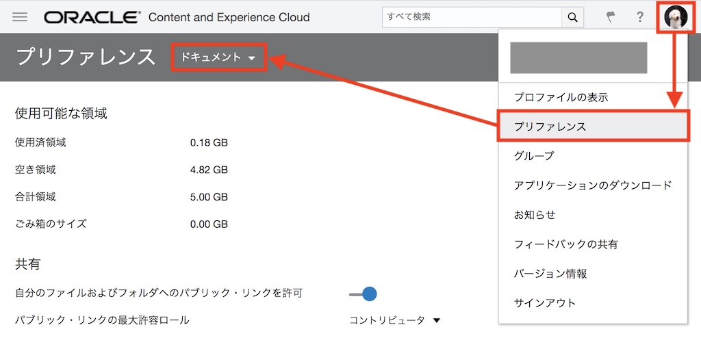
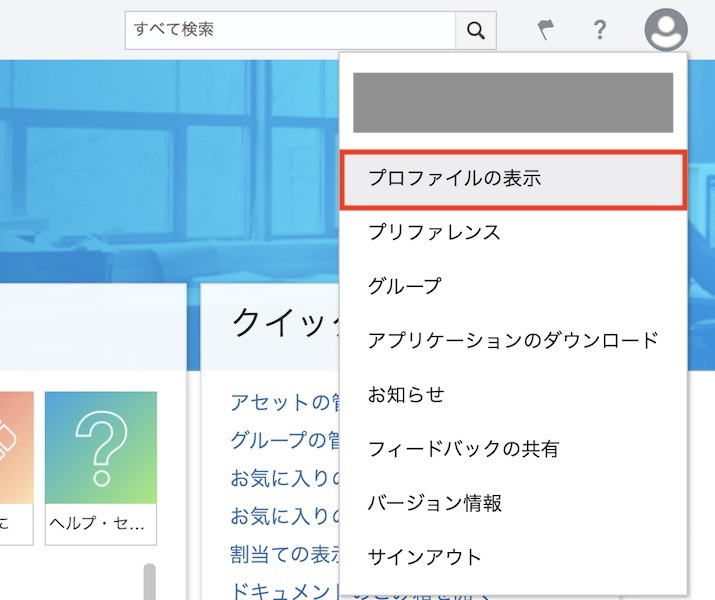
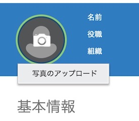

目次に戻る: Oracle Content Management のファイル共有機能を使ってみよう【初級編】
まず最初に OCM インスタンスにサインインします。次に、OCM を使い始めるにあたり、自分が利用可能な容量を確認します。
最後に、プリファレンスやプロファイルを設定し、自分が使いやすいようにカスタマイズします
【お知らせ】
この文書は、2021年11月時点での最新バージョン(21.11.1)を元に作成されてます。
チュートリアル内の画面ショットについては、現在のコンソール画面と異なっている場合があります。
前提条件
- Oracle Content Management インスタンスを作成する
- OCM の利用ユーザーに OCM インスタンスの CECStandardUser もしくは CECEnterpriseUser アプリケーション・ロールが付与されていること
1. OCM インスタンスにサインインする
1.1 OCM ホームを開く
-
OCM インスタンスにサインインします。OCM インスタンスの URL は、サービス管理者によるユーザー追加時に自動送信されるメールに記載されます

通知メールの説明
項目 説明 差出人 Oracle Content Management <no-reply@oracle.com> 件名 Welcome to Oracle Content Management 本文 英語のみ。本文中の TO EASILY LOG IN LATER, SAVE THIS URL もしくは SIGN IN を確認します -
通知メールのURLをクリックし、OCM インスタンスにアクセスします。なお、OCM インスタンスのURLの形式は以下の通りです。
https://<OCEInstance>-<CloudAccount>.cec.ocp.oraclecloud.com/documents/home <OCEInstance>: OCEインスタンス名 <CloudAccount>: クラウドアカウント名（テナンシー名） -
ユーザーIDとパスワードを入力し、「サイン・イン」 をクリックします

[TIPS]
パスワードを忘れてしまった場合は、サインイン画面下部の 「ここをクリックしてください」 をクリックし、パスワードの再設定をしてください -
OCM のホーム画面が開きます

1.2 プリファレンスの確認と変更
プリファレンスより、自分に割り当てられた使用可能な容量を確認できます。また、プリファレンスをデフォルト設定から変更し、自分が使いやすいように変更します。
-
このインスタンスで自分が使用可能な容量を確認します。右上のユーザーアイコン→プリファレンス→ドキュメント をクリックします。
-
「使用可能な領域」の「空き領域」が現在利用可能な容量となります（この場合 9.74GB が使用可能な容量です）

[MEMO]
ユーザーへの割当て容量は、この OCMインスタンスのサービス管理者により管理されます -
必要に応じて、プリファレンスのその他の項目を設定・変更します
-
一般: 表示言語およびタイムゾーンを設定します

-
通知: 会話でフラグ設定された場合の通知設定を変更できます
-
会話: 会話機能利用時の動作を設定します
-
ドキュメント: このインスタンスにおける割当て容量、ファイル制限（登録不可なファイル拡張子および最大ファイルサイズ）を確認できます。また、パブリック・リンク機能に関するデフォルトの動作をカスタマイズできます。なお、サービス管理者により、このインスタンスの全体的な共有ルールが設定されている場合、ここにあるオプションの一部は使用できないことがあります
-
リンクされたデバイス: このインスタンスに接続したモバイル端末もしくはデスクトップ・アプリケーションの一覧が表示されます。「取消」をクリックされたデバイスは、接続が取り消され、サインインからやり直しとなります。また、取消しを実行されたデバイスに格納されているすべてのローカル・コンテンツは削除されます
-
バージョン情報: このインスタンスのバージョン情報が確認できます
-
1.3 （オプション）プロファイルの変更
この手順は必須ではありません。
-
プロファイルを変更する場合は、ユーザーアイコン→プロファイルの表示 をクリックします

-
「プロファイルの編集」 をクリックし、プロファイル情報を編集します
-
ユーザーアイコンの画像を変更する場合、ユーザー・アイコンをクリックし、「写真のアップロード」 をクリックします

-
ローカル環境より写真を選択し、「OK」 クリックします
-
プロファイルの編集が完了したら 「更新」 をクリックします
以上でこのチュートリアルは終了です。